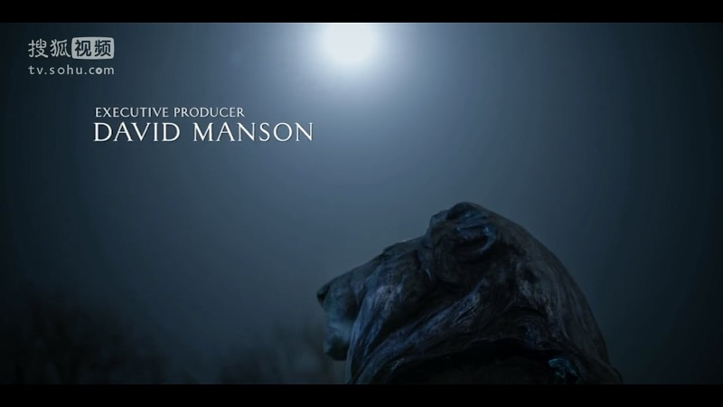
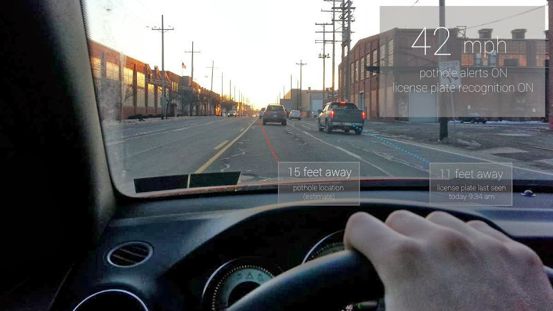

Clarity 是清晰的感觉。
从 iOS 7 开始，Apple 正式把这种感觉引入了系统设计。
iOS 7 的天气 App 是对这种感觉的最好阐释，雪天的背景占据了整个屏幕，没有了以往常见的界面边界，视界变的极为开阔。
因为去除了边界，内容得以占据更多的空间，因此足以让用户聚焦于内容本身而不是界面。
但是此时并不是没有了边界，从视觉的角度来讲，此时的天气 App，中间的大字号气温就成了中心，其他区域都是边界。
人眼的边界视力比中心差得多，你能轻易的分辨 29 ，但第一眼却很难注意到下面的气温都是些什么。
在这种情况下，把次级消息放在边界就成了更好的选择。
在《纸牌屋》这部电视剧里，片头的设计也很有这种 Clarity 的感觉。

文字在屏幕的位置清晰自然，浑然一体。

Clarity 这种感觉，是利用人眼对边界信息感知差的特点，将次级消息放在了边缘。将其应用于对现实场景的信息化中，能很大程度上减少信息和背景之间的干扰。
要达到这种效果，就需要你对信息位置的放置，背景色彩的过渡，以及现实场景有个妥善的处理。
Google Glass 在文字下方加了个半透明的灰色背景，来让你很好的聚焦边界信息。除了半透明的处理方法，如果信息块不高，区域统一，我们也可以用透明渐变来做这种底衬。这种处理你可以从钢铁侠的图片中感受到。